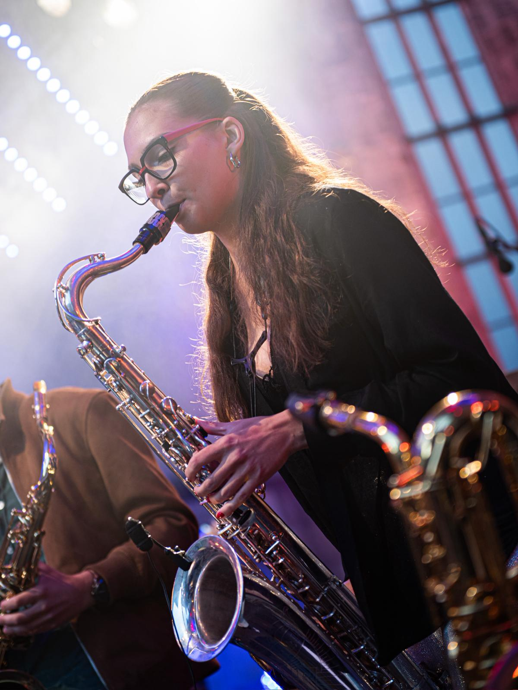

Live
Loading upcoming shows…
About
Estelle Dupont (*2005) ist eine aufstrebende Tenorsaxophonistin in der deutschen Jazzszene. Sie begann ihre Karriere in Baden-Württemberg, wo sie mit 14 Jahren im Rahmen der Jazz Juniors BW gefördert wurde und mit 16 Jahren zum Landes Jugend Jazz Orchester aufstieg. Bis 2025 war sie Teil des Orchesters, mit dem unter anderem zwei CDs aufgenommen und eine Tour nach Indien unternommen wurde. 2022-2023 war Dupont Jungstudentin an der Hochschule für Musik Mannheim bei Prof. Stefan Karl Schmid. Seit 2024 studiert sie Jazz Saxophon im Bachelor an der Hochschule für Musik Nürnberg in der Saxophonklasse Prof. Klaus Graf. 2025 bestand sie das Vorspiel für die aktuelle Besetzung des Bundes Jazz Orchesters, mit dem Dupont seitdem deutschlandweit unterwegs ist. Ihr Fokus liegt auf Bigbandmusik, sodass Dupont sich schon in ihren jungen Jahren neben dem Bujazzo in weiteren professionellen Bigbands, wie dem Groove Legend Orchestra, der Thilo Wolf Bigband oder dem Sunday Night Orchestra, präsentieren durfte. Die Saxophonistin ist auch in verschiedenen kleineren Besetzungen zu finden, wie Beispielsweise dem Saxophonquintett “Pentaphone Project”, den Funk Bands “Jazzify” und “FUNKgeraet”, dem Jazzquartett “Kalle Quartett”, sowie verschiedenen Projektbands, mit denen sie schon in etablierten Jazzclubs wie dem Bix in Stuttgart, dem Ella und Louis in Mannheim, dem Jazzpoint Wangen, der Hemingwaylounge Karlsruhe, dem Jazzstudio Nürnberg und vielen weiteren, aufgetreten ist.

Media
Bands


Kalle Quartett
Modernes Jazzquartett - klare Melodien, Interaktion, zeitgemäßer Quartett-Sound.
Duo Hülsmann Dupont
Leichtes Jazz-Duo - für jeden Anlass die passende Musik
Sonstiges
Musikrat
Artikel öffnen
Two Nations Under One Groove
„Der Jazz ist eine Lingua franca. Dass sich in ihr Musiker aus den verschiedensten Ländern und Kulturen verständigen können, macht gerade seine Stärke aus.“ Dass dieses Zitat von Manfred Papst noch immer aktuell ist, haben das niederländische Nationaal Jeugd Jazz Orkest und das deutsche Bundesjazzorchester bei ihrer Kooperation im September selbst erlebt. Unter dem Motto „Two Nations Under One Groove“ trafen sich beide Orchester unter dem Dach der Landesmusikakademie NRW in Heek um eine Woche lang zu proben, sich auszutauschen und internationale Freundschaften zu schließen. Dieser Austausch hat eine lange Tradition, unterstützt durch den Deutschen Musikrat.

Story
Woodstock
Hallo ich war bei Woodstock. War cool